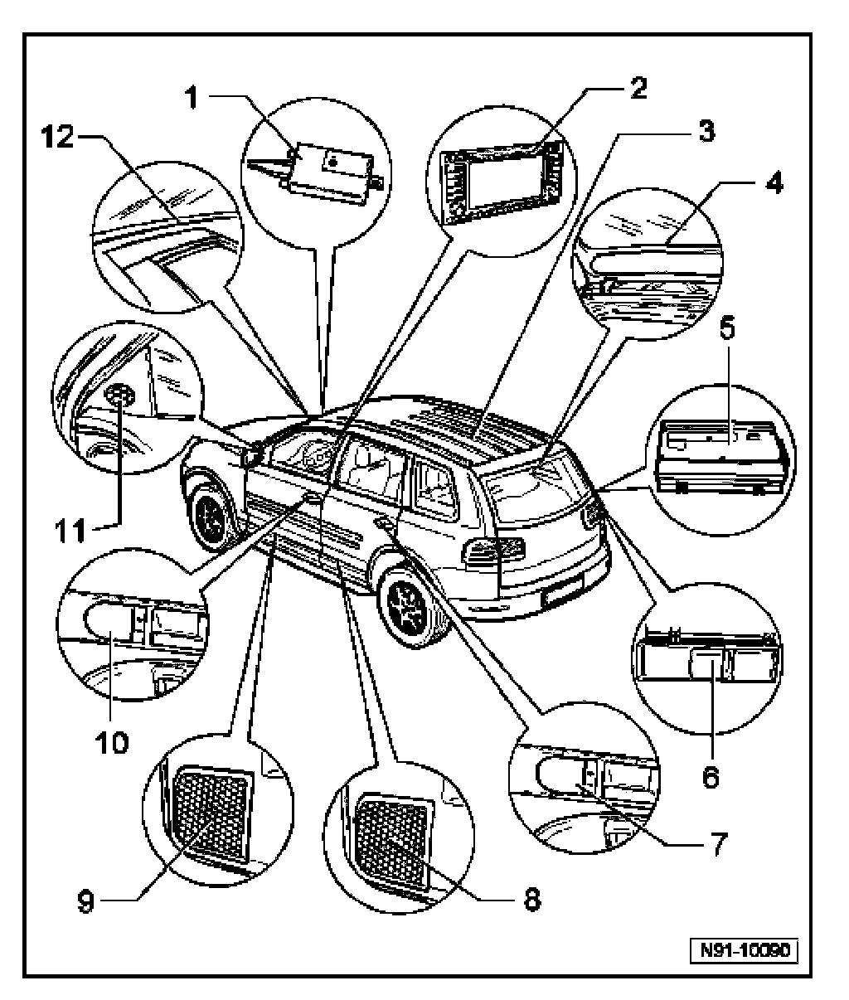

Navigation System: Locations
Radio/Navigation System "Sound II", Component Overview

1. Navigation System (GPS) Antenna -R50-, Radio/Telephone Antenna -R51-, Telephone/Radio Antenna Amplifier -R45-
- Integrated antenna/amplifier unit.
- In right front fender above headlight assembly
2. Radio/Navigation Display Control Module -J503-
- In center console.
- Multi-pin connector assignments.
3. Antenna Selection Control Module -J515-
- Under rear molded headlining.
4. Antenna Amplifier 2 -R111-, Antenna Amplifier 3 -R112-
- In upper part of rear lid.
5. Amplifier
- In right rear luggage compartment behind access panel.
6. CD Changer -R41-
- In right rear luggage compartment behind access panel.
7. Rear DSP Midrange Speakers -R105-, -R106-
- In rear doors by door handle trim.
8. Rear Bass Speakers -R15-, -R17-
- In lower rear door trim.
9. Front Bass Speakers -R21-, -R23-
- In lower front door trim.
10. Front DSP Midrange Speakers -R103-, -R104-
- In front door by door handle
11. Front Treble Speakers -R20-, -R22-
- In front door in mirror triangle
12. Center Mid/High Range Loudspeaker -R158-
- In center of instrument panel.